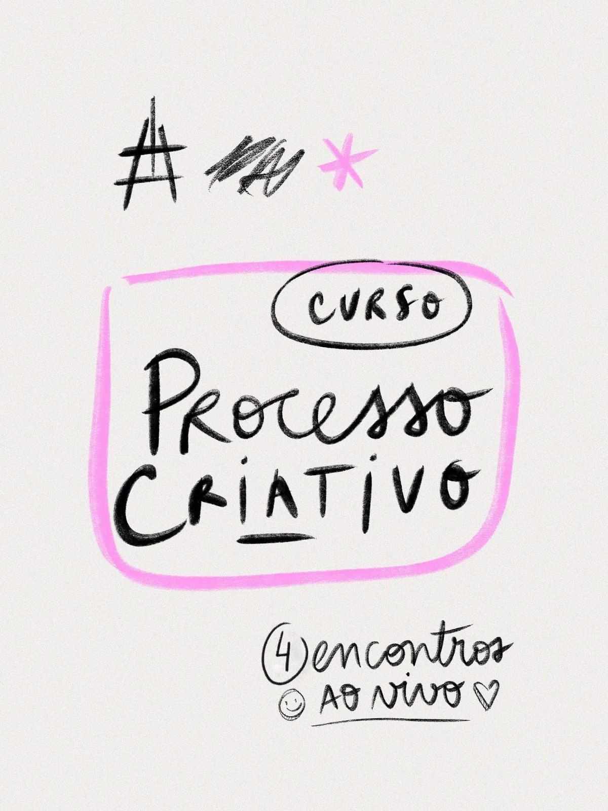
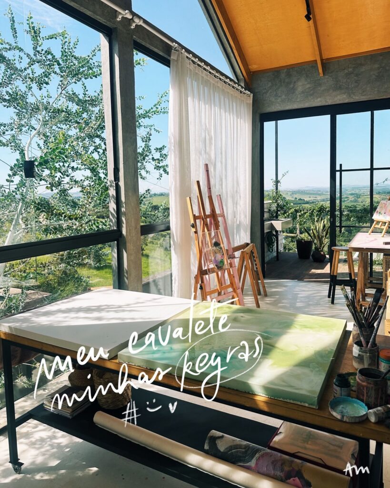
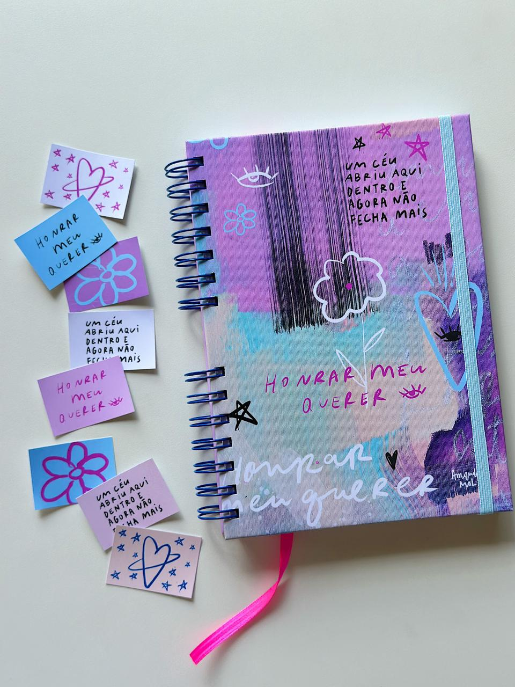
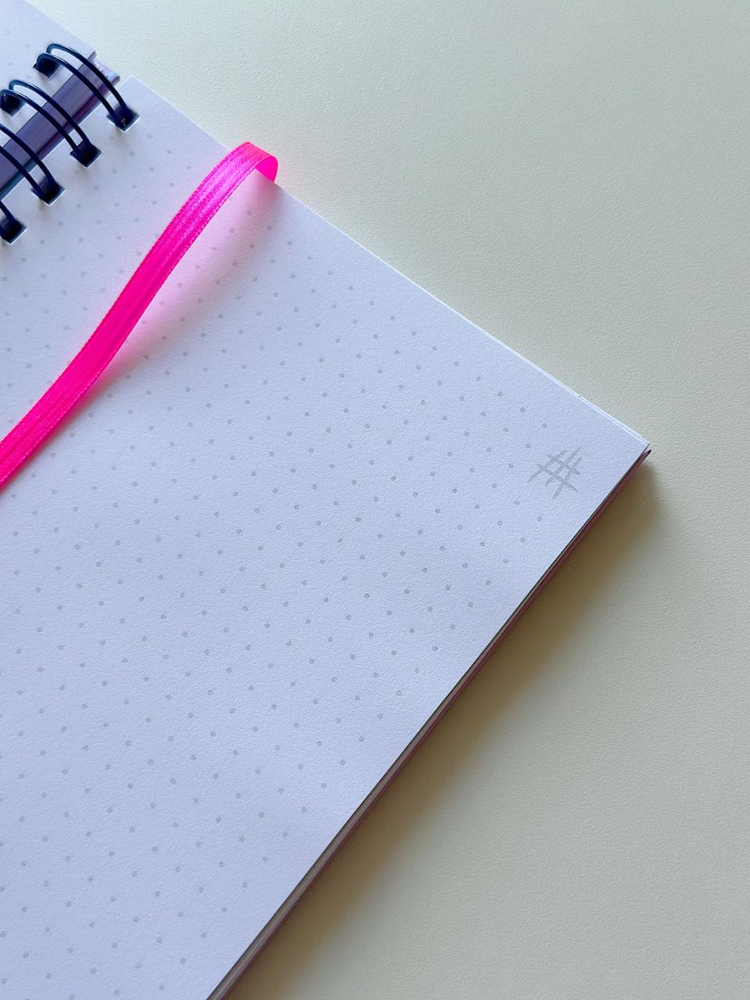
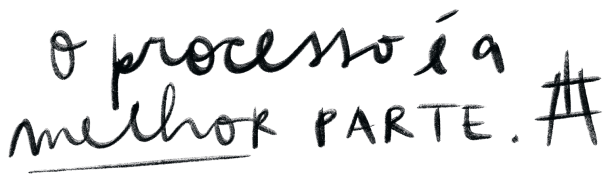
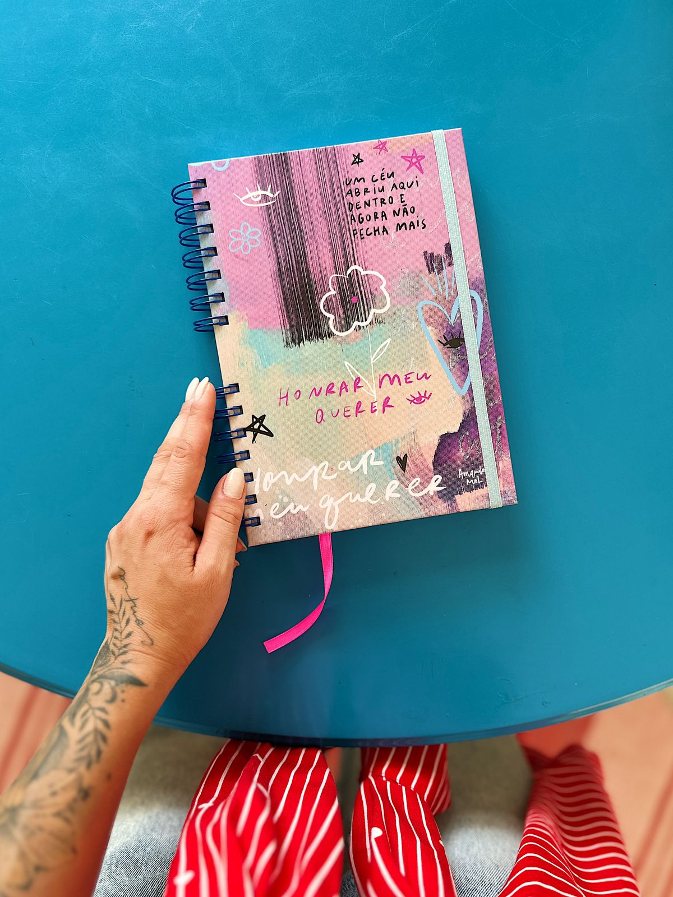
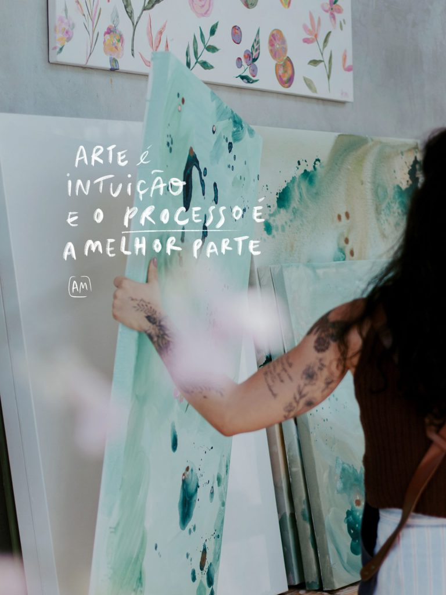
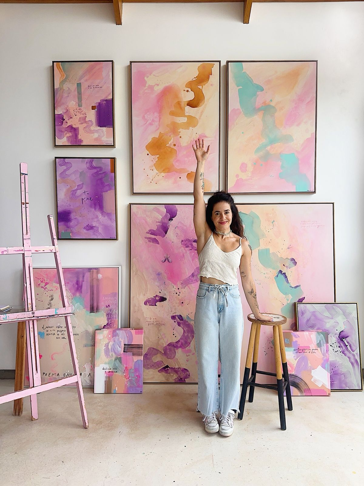

CURSO ONLINE
5, 7, 19 e 21 de maio
às 19:00h
R$ 590,00
Em até 3x de R$ 196,67 sem juros
Data: 5, 7, 19 e 21 de maio às 19:00h | duração 2h
• você será direcionada para o whatsapp, escolha sua inscrição, que enviarei o link por lá!





Sobre abraçar a demanda criativa que existe em nós. Este é um curso para reconectar com a nossa criança interior e não buscar grandes saltos e sim pequenos passos diários em direção ao que nos preenche a alma. Criar não é algo grandioso e difícil, é um chamado interno e portanto só nós podemos atendê-lo. Escolher ouvir a nossa artista dando permissão para ela se expressar, é algo transformador.
Não é uma tarefa simples mergulhar em um processo criativo e quando o fazemos sentimos uma confirmação íntima de que estamos certas, de que é mesmo "por ali"! Como artistas desassossegadas, sabemos que um dos pontos de conexão com o sentido da vida é exatamente esse: vivenciar o criar constante. O que nos mantém nesse movimento consistente?
Neste curso, compartilho o meu processo de mergulho em mim mesma durante a criação de uma nova série para extrair poesia, pintura, desenho e o que mais puder surgir, de uma mente que não deseja se perder no vazio da rotina automatizada. Percorro todas as etapas, desafios, descobertas e evoluções até chegar nas primeiras pinturas e publicações. Criar uma série nova representa a travessia que estou vivenciando na minha própria vida, que naturalmente reflete em como desejo vivenciar a minha arte e mostrá-la para o mundo.
Nessa travessia acolho "meus tantos possíveis" com coragem e consistência, percebendo claramente que a autenticidade é o que temos de mais valioso. Por isso quando comecei a escrever sobre o Processo Criativo, mapeei cada pequeno passo diário que me ajuda a manter a musculatura da minha artista.
Este curso se trata do mergulho & travessia, de uma experiência que ainda não se encerra. Entender o processo como a melhor parte faz com que a gente valorize os pequenos passos em busca da artista que desejamos ser.
Você receberá em casa este produto: o Diário. Um caderno para te acompanhar em seu processo criativo – escritas, inspirações, desenhos e tudo que surgir durante seu "mergulho fora do raso".
Este produto foi pensado exclusivamente para as alunas do curso com o objetivo de se tornar uma âncora do seu ponto de partida e do tema que escolher se debruçar, apontando para nossa intuição de fazer mais arte do que conteúdo.
FORMATO A5 – 21 x 15 cm
Capa dura com elástico e wire-o bronze
120 folhas brancas pontadas de 90g
+ Kit de adesivos

Depoimentos de alunas que voltaram a criar com mais liberdade, tiraram projetos do papel depois de anos de bloqueios e auto-cobrança e reencontraram alegria no processo. É incrível ver como cada pessoa vive o conteúdo de um jeito único e como o curso acaba sendo um respiro criativo no meio do automatismo corrido do dia a dia!
Inscrever• você será direcionada para o whatsapp, escolha sua inscrição, que enviarei o link por lá!

Compartilho minha forma de iniciar um processo criativo de uma nova série: mergulho em quem somos, inspirações, escrita, escolha do tema, o "destravar" da nossa artista.
Como seguir com constância e consistência o caminho da artista que desejamos ser: referências, hábitos, planejamento de tempo e produção de corpo de obra a partir da minha experiência pessoal no atelier.
Entrevista com uma artista para nos inspirar com gravação de um episódio do Podcast para a Série Artistonas.
Bate-papo e partilha de experiências das alunas com a presença da artista Maria Rocha e sua Pesca Poética.
• você será direcionada para o whatsapp, escolha sua inscrição, que enviarei o link por lá!
